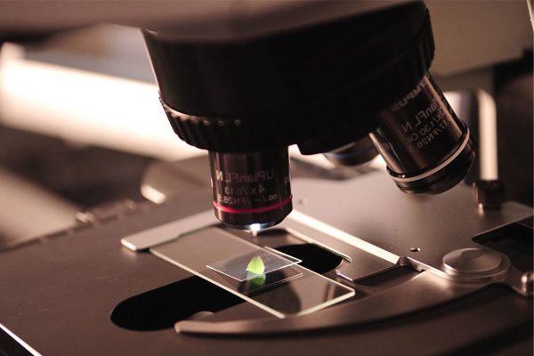

HOME > 연구소이야기 > zoom人
식품안전
롯데중앙연구소는 안전한 먹거리 제공을 위하여 소비자가 안심하고 선택할 수 있는 LOTTE 가 될 수 있도록 노력하고 있습니다.
-

- 연구개발Story
- 롯데중앙연구소에서는 깐깐한 분석을 수행하여 안전이 입증된 원료만을 선정합니다. 롯데의 ‘안심 제품’이 되기 위해서 고품질 원료의 선정하여 개발팀에서 소비자에게 가치 있는 제품을 제공하고자 노력하고 있습니다.
Developmment
-
- 품질안전Story
- 롯데그룹 제조사는 식품의 안전성 확보를 위하여 식품의 원료, 제조 과정의 식품오염이나 유해물질의 혼입 방지를 위하여 꼼꼼하게 위해 요소 중점 관리를 실시하고 있습니다.
Quality and Safety
-
- 유통안전Story
- 안전한 제품 My site 제도로 소비자가 안심하고 선택할 수 있도록 꼼꼼하게 유통매장 관리를 하고 있습니다.
Distribution Safety
-
- 식품안전Story
- 국가의 식품안전 법규와 글로벌 규격 이상의 깐깐함으로 무장한 LOTTE Standard Check list를 통한 제조 공장과 유통 매장 및 외식 매장의 관리를 수행하여 세계 어디서나 안전한 식품을 소비자에게 제공하고자 노력하고 있습니다.
Food Safety